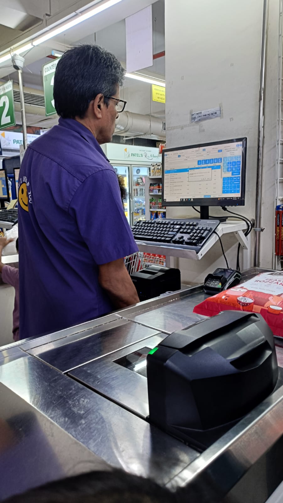
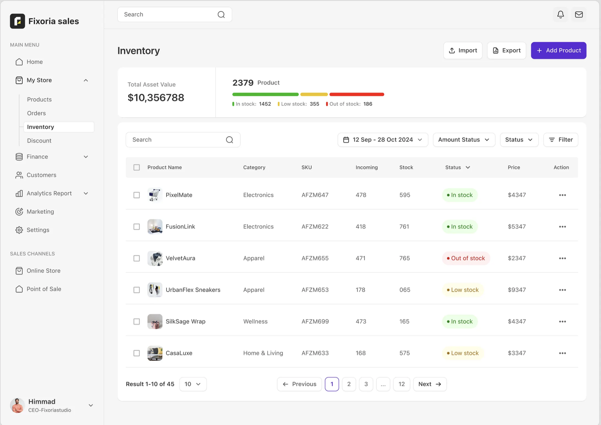
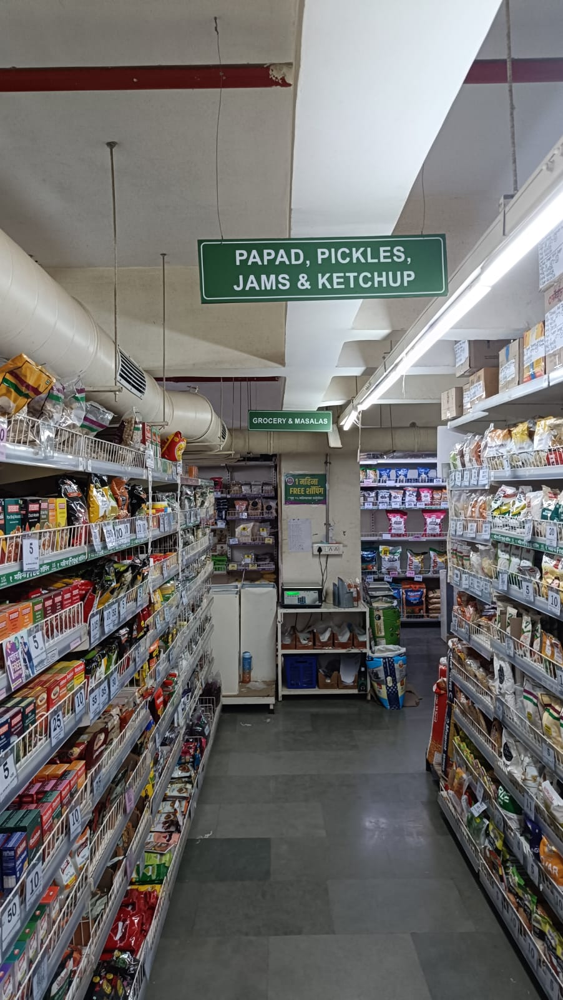
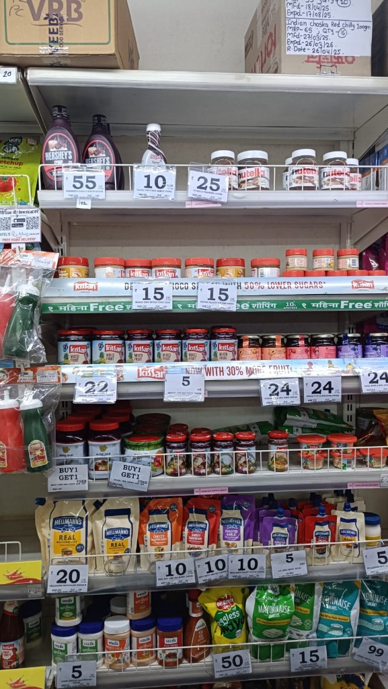
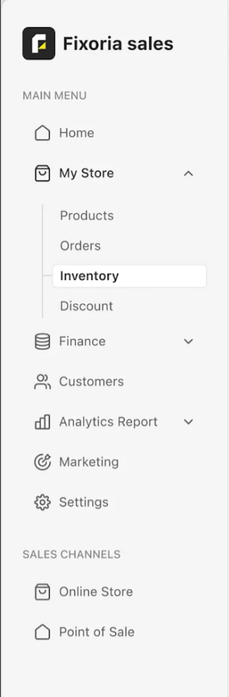
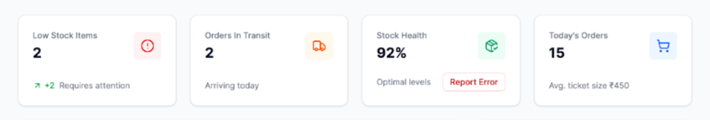
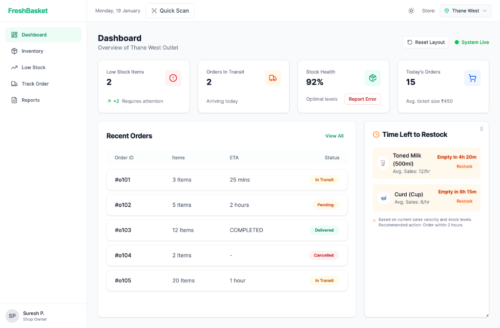
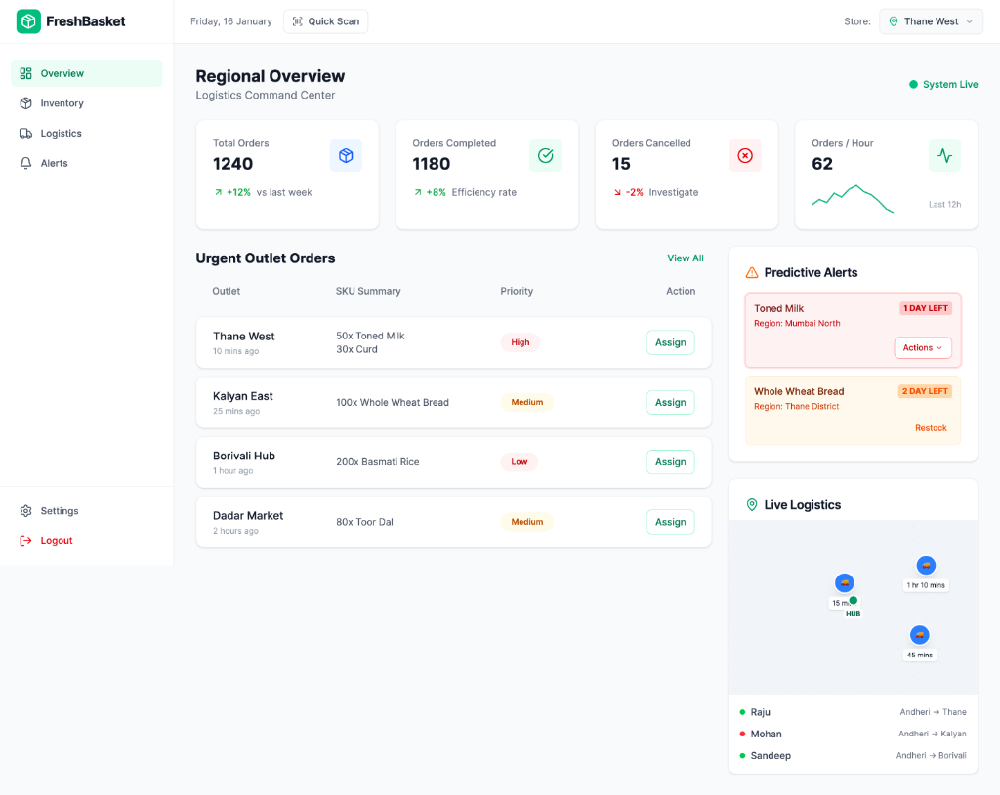

Shop owners and warehouse supervisors were managing a ₹10M+ inventory with paper logs — because the software they had was slower than a notepad.

Patel’s store, Mumbai · Field research · 2025Fixoria, a growing retail startup, was losing revenue not because of poor products or weak demand — but because the two people most responsible for keeping stock healthy were operating completely blind. Stock-outs nobody saw coming. Overstock sitting undetected. Deliveries arriving without anyone knowing the timing. Every critical number was buried behind navigation menus — click, memorise, navigate, forget, repeat — during the busiest hours of the working day.
Revenue lost to stock-outs and overstock — both caused by a system that made inventory status invisible without deliberate navigation effort.
Two distinct roles with urgent, different information needs — shop owner and warehouse supervisor — being failed simultaneously by one interface designed for neither.
When I sat down and tried to use the Fixoria dashboard the way Suresh and Ramesh would use it — standing at a counter, customers waiting — I realised something immediately. This system was not built for them. It was built for someone reviewing the business at the end of the day.

12+ items built for a CEO (Finance, Marketing, Analytics). Irrelevant for an operator on shift.
"Out of stock" is a tiny label buried above a massive table. Extremely easy to miss.
Every item looks equally important. The user must manually read every row to find critical issues.
Finding if a low-stock item is already ordered requires navigating to a completely separate Orders screen.
Shows current stock count only, with absolute zero warning for rapidly expiring perishable items.
The entire interface is just a paginated table. It functions as a data viewer, not an operational dashboard.
| FEATURE | FIXORIA — BEFORE | FRESHBASKET — AFTER |
|---|---|---|
| Navigation items | 12+ items — Finance, Marketing, Analytics, Customers, Discount... | 5 items (store) · 4 items (warehouse) — task-focused only |
| Home screen primary view | 45-product table, paginated across 12 pages | 4 stat cards + role-specific operational content |
| Stock health visibility | Small coloured bar above the table — easy to miss | Large "Stock Health 92%" stat card — first thing visible |
| Urgency signalling | All products equal — no priority ranking | High / Medium / Low labels + Time Left to Restock panel |
| Perishable alerts | None — had to manually filter and check each item | Predictive Alerts with exact countdown — "1 Day Left" |
| Stock + orders in one view | Two separate sections — no connection visible | Both visible on the same home screen |
| Logged in as | Himmad, CEO — not the operator | Suresh P., Shop Owner · Ramesh K., Warehouse Supervisor |
These are not invented personas. These are the roles I met in the field and observed at work.
Monitors sales, tracks incoming orders, and manages stock health for a single store during peak and off-peak hours.
Manages physical stock across multiple outlets, monitors perishables, tracks deliveries, and coordinates logistics across the region.
I visited shops and warehouses during peak hours — mornings when deliveries arrived, afternoons when orders spiked. I observed owners and supervisors as they worked. I noted where they paused, where they made mistakes, and what they did when the system frustrated them.


Paper logs sat beside every till and every warehouse dispatch point. Workers had stopped using the digital system — not because it broke, but because it was slower than a notepad.
Overhead fluorescent tubes created visible screen glare at every checkout counter visited. Nobody had flagged this internally — it only became apparent on site.
Every shelf had its own handwritten layer — price tags, expiry dates, reorder dates, quantity notes, all written by hand and clipped to the shelving. Staff built this parallel system because the app did not track what they needed at shelf level.
Workers had stopped using the digital system entirely. Paper logs sat beside every till and dispatch point. The app had been defeated by a notepad. The redesign would need to earn that trust back.
I interviewed both user types separately, in their own environments. These clips capture the specific frustrations that shaped every design decision that followed — not general opinions, but precise moments of friction.
"I need to know what's running low before the morning delivery. But by the time I find that in the system, the delivery is already here."
What I was looking for: Whether users navigated proactively or waited to be notified. What surprised me: She wasn't describing a slow system — she was describing a system that made her late. Information arrived after the moment to act had already passed.
"The perishables — milk, curd, bread — I need to know today which ones will run out. The app doesn't tell me that. So I keep a separate list."
What I was looking for: Whether supervisors relied on the system or had workarounds. What surprised me: He had built a parallel manual system not because the app was broken — but because it didn't surface the right information. That distinction shaped the entire predictive panel.

A cluttered sidebar with Finance, Marketing, and Analytics. Every critical number requires deliberate navigation to find. The user has to assemble the picture themselves by clicking around.

Four stat cards visible the moment the app opens. Low stock, orders, health — all upfront. The operator sees the full picture without a single click, instantly ready to act.
Design principle: Move from passive reporting to active prediction. The dashboard should warn about what is about to happen — not just record what has.
After the field visits I had a clear picture of what was wrong. What I did not have yet was the answer. Here is how I worked through it — step by step.
The mistake the old dashboard made was organising information around what the system knew, rather than what the user needed to know. So I flipped the question. Instead of "how should I arrange this data?" I asked: what is the very first question Suresh has when he opens the app?
For Suresh at the store: Do I have anything running critically low right now? That is it. Everything else comes after. For Ramesh at the warehouse: How is today going — are orders moving, is anything going wrong? He needs a read on regional operations first, then goes deeper.
Two lists — one per user — of the three questions each person has in their first ten seconds in the app. Those lists became the brief for the home screen. If the app could answer those questions without a single click, it would already be dramatically better than what existed.
I looked at dashboards outside of inventory — logistics tracking tools, order management systems — specifically looking for examples where someone needed to make fast decisions under time pressure. The pattern I kept seeing in the good ones: a summary layer at the top showing system health at a glance, with details available one level below.
The old Fixoria dashboard actually had the right instinct — the stock health bar existed. It just was not given enough priority. It sat above a 45-product table, so the table dominated the attention. I needed to take that instinct and make it the entire architecture of the home screen.
Good operational dashboards start at "system health" before going to "detail." Fixoria started at detail and buried the health summary. Everything needed to flip.
The old dashboard had Finance, Marketing, Analytics, Report, Discount, and Customers all in the primary navigation. For Suresh's job, none of these are needed at the counter. For Ramesh's job, none of them are relevant during a warehouse shift.
I made a deliberate decision: the redesigned home screen would contain only what each user needed to act right now. Everything else would remain accessible — one click away — but it would not compete for attention on the primary screen. The store owner went from 12+ navigation items to 5. The warehouse supervisor to 4.
Knowing what to take away was as important as knowing what to add. The biggest single improvement in the redesign came not from adding the predictive panel — but from moving the 45-product table out of the primary view entirely.
When I was working out how to show stock levels for the shop owner, my first instinct was to show current stock counts — you have 12 units of Toned Milk. That is what the old system was already doing, just buried in a table.
Then I thought: what does Suresh actually need to know? He does not need to know he has 12 units. He needs to know whether 12 units is enough to last through the day. The app knows the sales velocity. It knows the current stock level. It can do that calculation.
Instead of "12 units remaining" — show "Empty in 4h 20m · Avg Sales: 1.2/hr". That is a completely different piece of information. The first tells you where you are. The second tells you how long you have. This became the design principle for the entire project: wherever possible, turn a status into a prediction.
I did not start by wireframing the full dashboard. I wireframed the four summary cards first — and I started with the store owner because that was the simpler job to solve: Low Stock Items, Orders in Transit, Stock Health %, Today's Orders. Four numbers, large, visible, no interaction required.
I tested the layout with one simple question: if Suresh opens this app and has 10 seconds before a customer needs attention, can he see everything important? If yes, the layout works. If anything important requires a click, it needs to move up.
Both dashboards use four stat cards at the top — same pattern, same position — but the content of those cards is completely different, because the first questions are completely different. The store owner's cards answer "What is the state of my store?" The warehouse supervisor's cards answer "How is regional operations performing?" The shared architecture, role-specific content.
The old system tried to serve both the shop owner and the warehouse supervisor with the same interface. That was the root of the problem. Their jobs were different enough that one layout could not serve both well.
Once the store owner dashboard was solid, I designed the regional dashboard using the same architectural principle — four stat cards at top, priority-ranked content in the main area, predictive content in the right panel — but with completely different content.
Two dashboards that feel like they belong to the same system — same navigation structure, same visual language — but each one answering the specific first questions of the person using it.
The old system was organised around data. The redesign was organised around decisions. The product table moved to a secondary view. In its place: a persistent summary layer that told both roles exactly what they needed the moment they opened the app.
The table was the entire screen. Every critical number required deliberate navigation to find.

Four stat cards visible immediately. No navigation needed to know the state of the store.

Both dashboards open with four stat cards — but the cards are completely different. The store owner sees Low Stock Items, Orders In Transit, Stock Health %, Today's Orders. The warehouse supervisor sees Total Orders, Completed, Cancelled, Orders/Hour. Same pattern, different first questions.
Calculates time-to-empty based on live sales velocity. Toned Milk: empty in 4h 20m. Warns before the problem — doesn't report after it. This was the design decision that mattered most to users.
Perishable urgency surfaced with exact timers — "1 Day Left" for Toned Milk, "2 Days Left" for Whole Wheat Bread, named by region. Ramesh can act before expiry, not after it.
The product table moved off the home screen — still accessible from the navigation, but no longer the default view. Knowing what to take away was as important as knowing what to add.
When I brought the redesigned interface to testing with both shop owners and warehouse supervisors, error rates improved immediately. But I also observed something I had not designed for.
Experienced users — 3 to 5 years on the old system — reached for buttons that no longer existed in those positions. Five years of ingrained habit encountering a new spatial reality.
Day 1–3–7 follow-up confirmed hesitation dropped sharply by Day 3 — a transition cost, not a design flaw. The solution is demonstrated in the feature demo below.
Most case studies stop at high-fidelity mockups. These are not mockups — this is the shipped product. Each feature is traceable to a specific moment in a shop or warehouse where a real person hit a real wall.
Users drag and lock any action to their preferred screen position. Built directly from the muscle memory finding — experienced staff preserved familiarity, new staff adopted the default. The system adapted to the user.
Fluorescent lighting at checkout counters made the light-mode interface almost unreadable — a problem invisible from a desk, obvious on site. The toggle was built into the top bar from day one: one tap, any screen, no Settings navigation required.
"The paper logs were put away. Not because they were told to. Because the tool was finally faster."
The paper logs, the lighting glare, and the muscle memory friction were all invisible from a desk — none appeared in the original brief. All three shaped major design decisions. The insights that mattered most came from being physically present.
On the next project: if the environment is too constrained to allow field research, that constraint needs to be surfaced as a risk from day one — not resolved by skipping it.
Two roles, overlapping but not identical needs. Where they converged — the stat card layer served both. Where they diverged — two distinct dashboards. One undifferentiated interface would have failed both simultaneously.
On the next project: identify all operator roles before wireframing begins. The number of distinct roles shapes the information architecture more than any other single input.
Surfacing the stat cards required deprioritising the detailed table — a decision that changed the entire primary experience and had to be defended to stakeholders. Articulating what you removed, and why, is as important as articulating what you added.
On the next project: name the removal in the brief. If you can't say what you're taking away, the design is not finished.
The Time Left to Restock panel was the feature both roles mentioned most — above the layout, above speed, above the toggle. The shift from reporting what happened to predicting what's about to happen is the difference between a dashboard and an operational tool.
On the next project: ask whether any data in the system could be a prediction rather than a status. The answer is almost always yes.